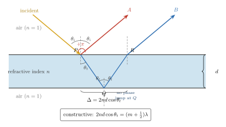

肥皂泡为什么会有彩色?
小时候的夏天, 吹肥皂泡, 泡泡在阳光下飘起来, 表面流过一层层色彩——紫、蓝、绿、黄、红, 像一幅缓慢旋转的油画. 泡泡破了, 颜色就没了, 空气中什么都没留下. 汽车修理厂门口, 雨水上漂了一层机油, 在柏油地上也是同样的色带. 蝴蝶翅膀、孔雀羽毛, 凑近看, 全是这种会随角度变化的彩光.
这些颜色跟颜料不同. 颜料是分子选择性吸收某些波长后, 把剩下的反射给我们; 肥皂水本身是无色的, 机油在瓶子里也是近乎透明的. 那么这彩色从哪来? 上一节讨论玻璃与金属时, 我们把反射率写成折射率与消光系数的函数, 得到的答案跟波长的依赖比较温和. 单一界面反射不足以解释肥皂泡那种鲜艳、多变、会随厚度流动的彩色. 真正的机制, 是两条反射光的干涉.
一张薄膜有上表面和下表面. 入射光走到上表面, 一部分立刻被反射, 另一部分折射进入膜内; 折射光走到下表面再反射一次, 然后从上表面折射出去, 回到空气. 这两束光是同一束原始光被分成的两半, 在空气中重新相遇, 它们之间的相位差决定了它们是"加"还是"减". 薄膜的彩色, 就是这个加减在不同波长上得到不同结果的产物.
一、两束反射光的光程差
设膜折射率为 $n$, 厚度为 $d$, 膜两侧都是空气 (折射率 1). 一束单色光从空气中以入射角 $\theta_i$ 打到上表面. 一部分立即反射, 我们称之为光线 A; 另一部分折射进入膜, 膜内折射角为 $\theta_t$, 满足 Snell 定律 $\sin\theta_i = n\sin\theta_t$. 这束折射光走到下表面后反射, 再从上表面折射出来, 我们称之为光线 B.
几何上可以推出, B 比 A 多走的那段路, 对应的光程差 (optical path difference) 为
$$ \Delta = 2nd\cos\theta_t. \tag{1}$$
这里光程 = 实际路径 × 折射率. 推导的关键在于: B 在膜内走的路径比几何长度更长, 因为需要乘以 $n$; 同时 A 和 B 从上表面的不同点出发, 它们有一段横向的几何偏移, 这段偏移在空气中相位差贡献恰好减掉了一部分, 最后剩下的就是上式干净的 $2nd\cos\theta_t$. 正入射时 $\cos\theta_t = 1$, 简化为 $\Delta = 2nd$, 最直观: 光线 B 在膜里穿过一个来回, 所以光程是 $2nd$.

光程差 $\Delta$ 每增加一个波长 $\lambda$, A 与 B 就多错开一个完整的正弦周期. 因此只看光程差的话, 相长条件似乎应该是 $\Delta = m\lambda$, 相消条件是 $\Delta = (m+\tfrac12)\lambda$. 但这并不是最终答案, 因为反射本身还会带来一个额外相位. 下一节我们就补上这块.
二、反射时的 π 相位跳变
光在两种介质的界面上反射时, 相位未必保留. 关键规则来自 Fresnel 方程: 当光从疏介质 (折射率低) 打向密介质 (折射率高) 时, 反射波的电场相位相对入射波多了一个 $\pi$ 的跳变——相当于正弦波被整体翻转了一下; 而从密介质打向疏介质, 没有这种翻转.
一个熟悉的类比是弦的反射. 把一条绳子一端固定在墙上, 另一端抖一下, 向墙传一个凸起的波包. 波包打到墙 (视为"更重"的介质) 后反射回来, 变成一个凹下的波包——这就是 $\pi$ 翻转. 如果那一端接到一条更轻的绳子, 或者干脆自由摆动, 反射回来的就仍然是凸起的波包, 没有翻转. 光的电场也遵守类似逻辑, 只不过"轻重"换成了折射率.
回到薄膜: 两束反射光中, A 是空气 → 肥皂水膜, 疏 → 密, 有 $\pi$ 跳变; B 的那次关键反射发生在膜内 → 空气下侧, 密 → 疏, 没有跳变 (注意 B 在 P 点是折射进入膜, 不是反射, 所以 P 点的跳变不计入 B 的相位; R 点是折射出去, 也不涉及反射相位). 这样 A 和 B 之间, 除了光程差 $\Delta$ 对应的相位 $2\pi\Delta/\lambda$ 外, 还额外有一个 $\pi$ 的相对差.
所以实际的干涉条件是: 两束叠加要相长, 总相位差必须是 $2\pi$ 的整数倍, 也就是
$$ \frac{2\pi}{\lambda}\cdot 2nd\cos\theta_t \;+\; \pi \;=\; 2\pi m, \quad m=1,2,3,\ldots $$
两边除以 $2\pi$ 再化简, 得到
$$ 2nd\cos\theta_t = \left(m - \tfrac12\right)\lambda, \quad m=1,2,3,\ldots \tag{2}$$
把 $(m-\tfrac12)$ 重新记为 $(m+\tfrac12)$, $m$ 从 0 起数, 就回到物理 brief 里的标准形式: 相长的条件是 $2nd\cos\theta_t = (m+\tfrac12)\lambda$. 相反, 相消条件则是 $2nd\cos\theta_t = m\lambda$. 注意这跟"单纯光程差相长"给出的答案正好颠倒——$\pi$ 跳变把 $m\lambda$ 和 $(m+\tfrac12)\lambda$ 的角色对换了. 很多初学者第一次推这类干涉就是在这里翻车, 原因永远是忘了算 Fresnel 相位.
三、白光照射: 颜色如何浮现
有了条件 (2), 肥皂泡的彩色立刻有了解释. 正入射 ($\cos\theta_t = 1$), 把 $m = 0$ 代入, 反射相长的最低阶波长是
$$\lambda = 4nd.$$
这是薄膜光学里最漂亮的一条"口诀". 换句话说, 如果膜的光学厚度 $nd$ 等于某个波长的 $1/4$, 那束波长的光就会在反射中被加强.
数字估算 1 (肥皂膜颜色): 肥皂水的折射率 $n \approx 1.33$ (跟水接近). 若局部膜厚 $d = 100$ nm, 则 $nd = 133$ nm, 对应相长波长 $\lambda = 4nd = 532$ nm——正好是鲜亮的绿色. 把厚度换成 $d = 150$ nm, 相长波长变成 $\lambda = 798$ nm, 已经出了可见光红端, 可见光里改由 $m = 1$ 阶的蓝色 ($\lambda \approx 266$ nm 倍的 $1/3$, 即 $\approx 266$ nm, 超出紫端) 起作用, 结果可见光大多相长减弱, 反射偏暗. 若继续变薄到 $d = 70$ nm, $\lambda = 4nd \approx 372$ nm, 接近紫外, 于是可见光里没有波长满足相长, 膜反射整体很弱, 显得发黑.
关键来了: 肥皂膜不是均匀的. 它像一张薄塑料袋立在那里, 顶上水会往下淌, 底部先变厚, 但蒸发也使整体越来越薄, 在引力和表面张力共同作用下, 膜从上到下形成一个厚度连续变化的剖面, 常见范围 $d \approx 300\text{–}1000$ nm (对应较老、较亮的彩色区), 靠近破裂前会薄到 $d \lesssim 100$ nm.
白光入射时, 每个波长各自按条件 (2) 选择它喜欢的膜厚. 膜上不同位置厚度不同, 因此呈现不同的相长波长, 叠加反射给我们的, 就是一条条从彩虹红向紫推过去的横向色带. 这也解释了为什么肥皂泡飘动时, 色带会像水波一样缓慢地向下滑动——膜在变薄, 每一个色带对应的"$d$ 等高线"也在向下移动.
四、黑膜、抗反射镀膜, 与一段三百年的历史
极限检验 (黑膜): 如果肥皂膜变得极薄, $d \ll \lambda$, 条件 (1) 给的光程差就远小于 $\lambda$, 对应相位 $4\pi nd/\lambda \to 0$. 这时两束反射光只剩下来自上表面的 $\pi$ 跳变引起的相位差, 两束振幅相近却相位相差 $\pi$——完全相消. 于是无论什么颜色的光照进来, 反射一律为零. 这正是实验室里常说的黑膜 (black soap film): 在快要破裂之前, 肥皂膜薄到几纳米, 反射几乎完全消失, 整片膜看起来黑得像没光一样——事实上光几乎全部透过去了. 黑膜是薄膜干涉的一个标准零点, 同时也是最早被 Newton 清楚记录下来的薄膜现象之一.
和黑膜正好相反的思路, 可以设计出人类的实用光学. 玻璃的正入射反射率约 4%, 单片镜头不算多, 可镜头系统有十几层, 累积下去, 一半的光可能就在表面反射丢掉了, 再加上这些反射光在镜筒里来回散射, 产生眩光, 把相机画质搞坏. 解决办法叫抗反射镀膜——在玻璃表面镀一层薄膜, 让上下两界面反射的两束光恰好相消. 从条件 (2) 的"相消分支" $2nd = m\lambda$ (注意, 此时镀膜夹在空气和玻璃之间, 上表面反射空气 → 膜是 $\pi$ 跳变, 下表面反射膜 → 玻璃也是 $\pi$ 跳变, 两个跳变相互抵消, 相消条件回到单纯光程差判据), 取 $m = 0$ 不行 ($d = 0$ 无膜), 所以写成更实用的 $\lambda/4$ 形式:
$$d = \frac{\lambda}{4n}.$$
数字估算 2 (MgF₂ 抗反射): 氟化镁 MgF₂ 在可见光的折射率 $n \approx 1.38$. 目标消除中间波段 $\lambda = 550$ nm 的反射, 代入公式得
$$d = \frac{550\text{ nm}}{4 \times 1.38} \approx 99.6\text{ nm}.$$
所以相机镜头、眼镜片上那层淡紫色的膜, 实际厚度就是 $\approx 100$ 纳米的 MgF₂. 这一层让 550 nm 的反射率从玻璃的 $\approx 4\%$ 下降到 $\approx 1\%$ 以下. 为什么镜头看起来是淡紫色? 因为只有中间波长被打下去, 红端和蓝端多少还剩, 二者叠加在反射光里, 人眼看到就是偏紫的残色. 更进一步, 把多层不同折射率的介质膜叠起来, 可以设计反射率接近 100% 的高反射镜 (HR) 或者只让几个纳米波宽通过的窄带滤光片——激光腔镜、通信波分复用器, 用的都是这类多层膜.
历史一瞥. 这些现象并不新. 1665 年, Robert Hooke 在 Micrographia 里就详细描绘了云母薄片、肥皂膜、矿物裂片上看到的"薄板颜色" (colours of thin plates), 并明确指出颜色跟厚度有关, 但他当时没能给出定量关系. 1704 年, Newton 在 Opticks 里把一块凸透镜压在平板玻璃上, 形成一张厚度从零向外缓慢变化的空气薄膜, 在上面观察到著名的牛顿环——一圈圈同心的彩色或明暗环带. Newton 测量环的半径随圆心距离的规律, 定量得到了颜色跟厚度的对应, 但他用的是自己的"光粒子"理论, 为了解释这种周期性, 硬生生造出"易反射与易透射相间的取向" (fits of easy reflection and transmission) 这样一个颇为别扭的补丁——用现代眼光看, 他其实已经推到了波动的门口, 只是不愿迈进去. 真正点破这张窗户纸的是 1801 年的 Thomas Young. 他把薄膜的明暗条纹跟他的双缝实验放在一起讨论, 说这两件事本质相同, 都是波的叠加, 并据此算出了可见光各色的波长. 薄膜干涉, 就这样从 Hooke 的一段细致观察, 被 Newton 变成定量实验, 再被 Young 解读为波动论的物证, 成为古典光学建立过程中的一块关键拼图.
小结
肥皂泡的彩色, 不来自颜料, 而来自薄膜上下两面反射光的干涉. 干涉的相位差由两部分决定: 光程差 $2nd\cos\theta_t$, 以及空气→密介质界面反射时的 $\pi$ 跳变. 两者结合, 给出正入射的相长条件 $\lambda = 4nd$. 白光照射厚度连续变化的肥皂膜, 不同厚度选择不同的相长波长, 彩色条纹就这样画出来. 在薄膜极限, 只剩 $\pi$ 跳变的贡献, 反射全部相消, 膜呈"黑膜"; 反过来, 把这一相消用在玻璃上, 就是一层 $\approx 100$ nm 的 MgF₂ 抗反射镀膜. 回到"光是什么"这一主线: 本节把干涉从上一部分的空间相干推进到界面相位这一更微妙的舞台——反射不只是能量的转移, 还是相位的标记. 下一节我们要把一个"界面" (两束光) 扩展到成千上万个界面, 去看光栅的衍射: 当许多束光同时叠加时, 相位的合作会变得更加锐利, 让光学分辨率走到新的量级.
▲